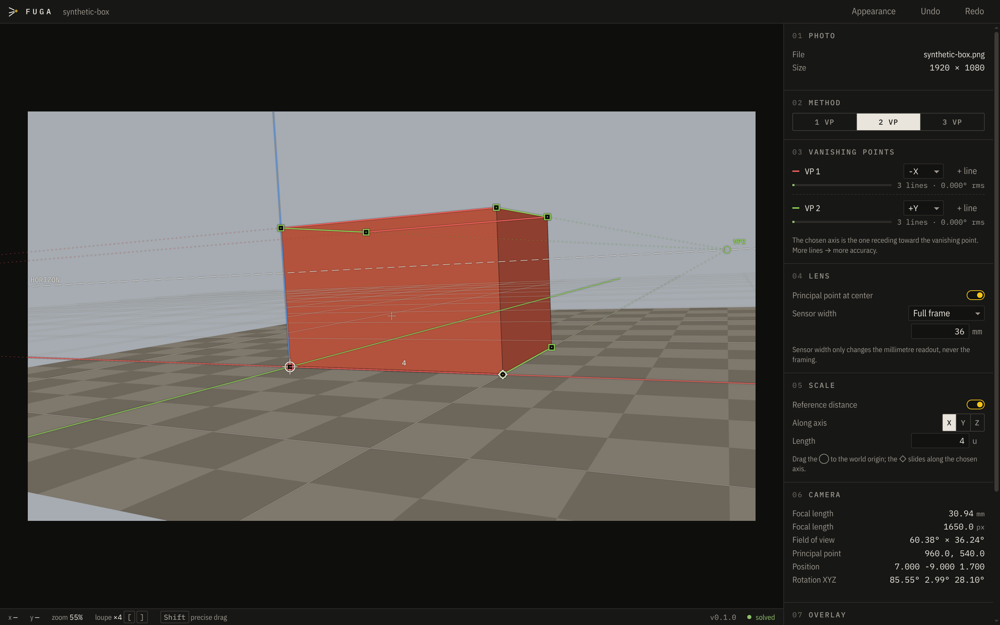

Free · Open source · Windows, macOS, Linux
Match your 3D camera to any photo.
Draw a few lines along the edges in your photo. Fuga works out the camera that took it — lens, angle and position — and sends it to Blender, Maya or any USD app, lined up perfectly.

01How it works
Three steps. No maths.
Open a photo
Drag any photo into the window — a building, a room, a street, a product on a table.
Trace the edges
Drag the coloured lines onto edges that are parallel in real life — the top and bottom of a wall, the sides of a road.
Export the camera
One click. Open the file in Blender or Maya and your scene's camera sees exactly what the photo shows.
02The idea
Parallel lines meet in a photo.
Stand between railway tracks and they seem to meet far away. That meeting spot is a vanishing point — ponto de fuga in Portuguese, which is where the name comes from.
Where those points sit in a photo depends only on the camera: its lens, its angle, its height. Show Fuga a few lines and it works backwards to that camera. You never touch a formula.
03What you get
Made for artists, built for precision.
Goes straight into your app
Blender and Maya get a ready-made camera with your photo as background. USD files open in Houdini, Cinema 4D, Unreal and more.
As many lines as you like
Every extra line makes the result more accurate. A meter tells you when your lines agree.
A magnifier that helps
Zoom right into the pixels while you drag, with your lines visible. Hold Shift for slow, fine moves.
Undo everything
Made a mess? Ctrl Z. Every change can be undone.
Real-world scale
Know one distance — a door, a tile — and the scene comes out in real metres.
Light or dark
Follows your system, or pick your own colours for the lines.
04Privacy
Your photos stay on your computer.
No account. No tracking. No uploads. The only thing Fuga ever asks the internet is whether a new version is out — and you can switch that off.
Free, and staying free
Fuga is open source under the GPL-3.0 licence: use it for anything, including paid work. Anyone can read the code and check what it does.
Designed and directed by Gelain, a motion designer and 3D generalist, and written with the help of AI (Claude). Every result is checked by automated tests, and the code is public.
Inspired by fSpy by Per Gantelius — thank you.
05Questions
Good to know
Is it really free?
Yes. No trial, no account, no ads. It is open source, so it will stay free.
Do I need to understand cameras or maths?
No. If you can see which edges in a photo are parallel in real life, you can use Fuga. The illustrated guide walks you through your first photo.
Windows or my Mac says the app might be unsafe. Is it?
The warning appears because Fuga isn't signed with a paid certificate — common for free apps. The download page shows how to open it the first time. The code is public, and every official installer is built automatically by GitHub from that code.
Which Blender and Maya versions work?
The Blender export is a plain script written for Blender 5.1 using long-stable features, with nothing to install. The Maya export works with Maya 2022 and newer.
I used fSpy before. What's different?
Fuga is built on the same idea and fixes what fSpy users asked for most: unlimited lines per vanishing point, undo, a better magnifier, exports beyond Blender, and an app that keeps working on new systems.
Was Fuga made with AI?
Yes, and we'd rather you hear it from us. Fuga was designed and directed by Gelain, a motion designer and 3D generalist, to find the exact camera behind a photo (its lens, angle and position) and bring it into 3D software, so the scene lines up with the picture without trial and error. It was written with the help of AI (Claude, by Anthropic). Every result is checked by automated tests against cameras with known values, and the source is public for anyone to review. If something looks wrong, please tell us.
How do I get updates?
Fuga tells you inside the app when a new version is out. The Download page always has the newest installers.
Something doesn't work.
Tell us on GitHub Issues, or from the app: Help → Report a Problem. A screenshot helps a lot.